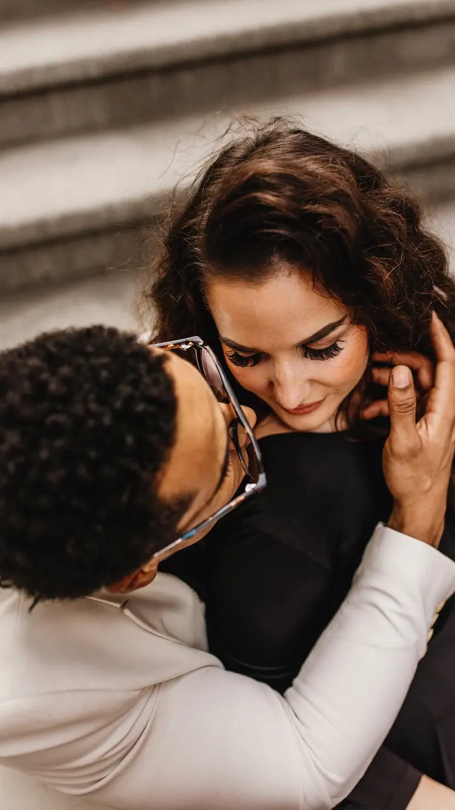

Svatby
Fotím váš svatební den od příprav po večer, v klidu a s citem pro drobné emoce. Rezervace svateb na sezónu 2026/27 jsou otevřené.

Jmenuji se Petra Vacková a jsem svatební a rodinná fotografka. Jsem maminkou dvou malých dětí a paničkou dvou fenek maďarského krátkosrstého ohaře, díky kterým jsem kdys…
Rezervovat termínK focení mě přivedla naše první fenka Mia. Přišla k nám jako osmitýdenní štěňátko a já chtěla mít na památku hezké fotky. Pořídila jsem si první zrcadlovku a po nocích se učila sama: pracovat se světlem, s programy i s úpravou fotek. Miiny fotky se pak dostaly do reklam, časopisů i soutěží.


Po Mie přišli psi kamarádů, moje rodina a brzy i první klienti. Z koníčku se stala práce, díky které jsem poznala spoustu skvělých lidí. Někteří jsou dnes mými věrnými klienty, jiní i přáteli. Nejvíc mě těší, když s vámi můžu jít kus cesty: partnerské focení, svatba, těhotenské focení, rodina a pak třeba znovu těhotenské.
Vedle focení se věnuji grafice, hlavně pro chovatele. První plakát jsem v roce 2015 udělala pro pejska kamarádky a dnes mám za sebou víc než sto prezentačních plakátů chovných jedinců a plánovaných vrhů. Focení i grafika jsou pro mě velkou vášní, do které se umím ponořit na celé hodiny.
Co fotím
Fotím váš svatební den od příprav po večer, v klidu a s citem pro drobné emoce. Rezervace svateb na sezónu 2026/27 jsou otevřené.
Venku v přírodě, u vás doma nebo v ateliéru. Ráda vás provázím od očekávání miminka až po rodinné procházky s dětmi.
Uvolněné focení pro dva, které často bývá začátkem naší společné cesty. Na začátku se stydí skoro každý, pak už je to spíš procházka.
Tvořím prezentační plakáty chovných jedinců, krycí plakáty a prezentace chovatelských stanic, ale i loga a vizitky. Fantazii se meze nekladou.
Fotografie jsou ilustrační
Postup
Ozvěte se přes formulář, e-mail nebo telefon a napište, o jaké focení máte zájem a jaký termín vás láká.
Probereme místo, čas i vaše představy. Fotit můžeme venku v přírodě, u vás doma nebo v ateliéru.
Žádné strnulé pózování. Ráda vám poradím a postupně z toho uděláme spíš společnou procházku, při které stud rychle opadne.
Fotky pečlivě vyberu a upravím. Svatební fotky předávám v dřevěné krabičce s flashkou a s vytištěnými fotografiemi.
Otázky
Právě přijímám rezervace svateb na roky 2026 a 2027. Napište mi datum a já se vám ozvu, jestli je volné.
Obojí. Fotím v exteriéru, v ateliéru i u vás doma, záleží na tom, co vám bude bližší.
Určitě. Psi mě k focení přivedli a mám doma dvě fenky, takže čtyřnozí členové rodiny jsou vždycky vítaní.
Prezentační plakáty chovných jedinců, krycí plakáty, prezentace chovatelských stanic, ale i loga a vizitky. Ráda se přizpůsobím vašim nápadům.